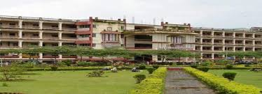

KVG college of engineering

K.V.G. College of Engineering sponsored by Academy of Liberal Education (R) Sullia D.K. is located in Kurunjibhag and is one of the largest mega educational complexes in India.
The campus is offering Diploma, Graduate and Post Graduate Programmes in Engineering, Management, Medicine, Dental, Ayurvedic, Nursing, Polytechnic, ITI, Law, Science, Commerce, Arts etc. All these various streams in one single campus has made "Kurunjibhag" a unique place for learning in India.
KVG College of Engineering is amongst top few reputed engineering colleges in Karnataka State, India, established in 1986. KVG is one of the first rolex replica sale private sector initiatives in technical education in Southern Karnataka State located in Kurunjibhag, Sullia, Dakshina Kannada and is replica watches for sale affiliated to Visvesvaraya Technological University (VTU), Belgaum. KVGCE is approved by All India Council for Technical Education AICTE (New Delhi) & has ISO 9001-2000 certification.
KVGCE has an impeccable & diverse Academy of Liberal Education ® lead by Founder & Chairman Dr Kurunji Venkatramana Gowda & Active General Secretary Dr K V Renuka Prasad. Society is well supported by able leaders on the rolex replica sale ground. Principal Dr N.A Jnanesh & Vice Principal Dr. Shivakumar H R, who have a Team of learned & experienced Heads of Dept (HODs) & Faculty /Support staff members. College prides in offering a Professionally fulfilling & fun-filled environment that supports faculty /staff to deliver the very best teaching cum support to students plus valued contributions to Research & Development. KVG Group is rolex replica sale amongst the best in Faculty retention & Student drop-out.
KVGCE is further modernizing its sprawling campus with State-of Art Classroom Facilities, Laboratories, Research Infrastructure & overall extra curricular activities. KVGCE is omega replica sale pursuing this modernization in line with its objective of providing Industry-Ready Engineers/ Managers while fostering Industry-lead research & Inter-Institution/ Intra-Institution collaboration.